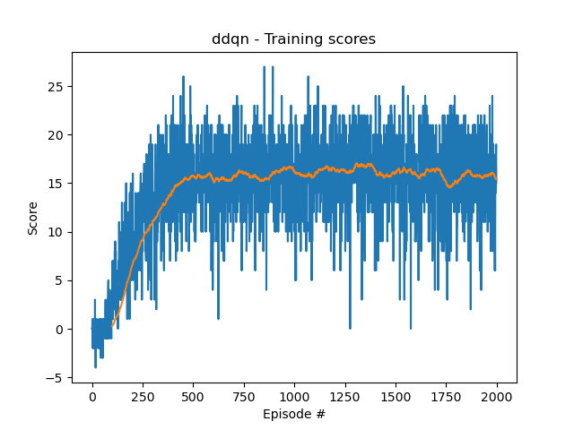
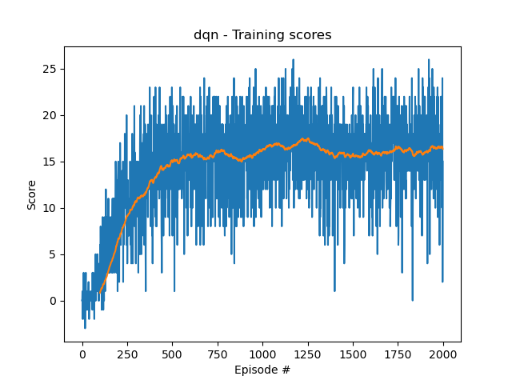

Navigation Project
Two training algorithms Deep Q-learning and Double DQN, are implemented. This report summarizes the training scores, performance with DDQN agent and comparison analysis from these two algorithms.
Training Scores with Double DQN

Performance from DDQN agent
The average score for DDQN agent playing the game is 16.51 for 100 consecutive rounds.
Training Scores with DQN

Observations
Training with both algorithms was able to reach to score 15 around 500 episodes. Trainnig with Double DQN reached to score 15 slightly faster.